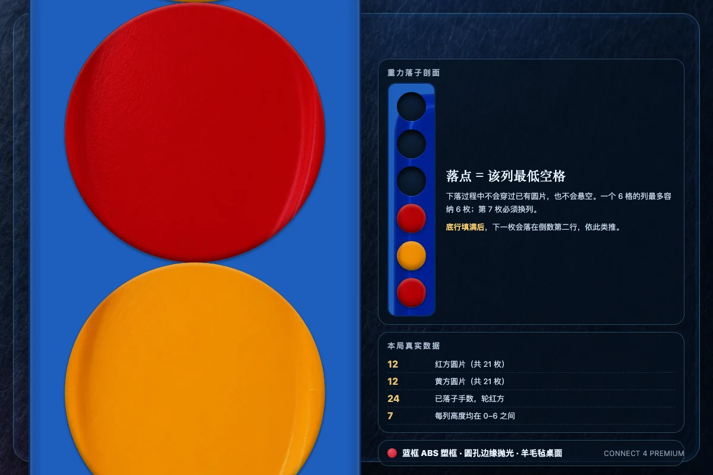

一句话规则：红方先手，双方轮流把圆片投入七列中的一列，圆片靠重力落到该列最低的空位。谁先在横、竖或两条斜线中的任一方向连成四枚同色圆片，谁就获胜；42 格填满仍无四连则判平局。


一、游戏目标与组件
四子棋是一款两人对弈的抽象策略游戏，英文名 Connect Four，也常写作 Connect 4、Four in a Row。它不需要发牌，也不需要隐藏信息，双方看到的是同一个完全公开的棋盘。胜负只取决于落子顺序、列的选择与对四连威胁的判断。
标准组件包括：一个竖直放置的蓝色塑料棋盘框，框内有 7 列 × 6 行共 42 个圆形棋格；红色圆片 21 枚，黄色圆片 21 枚，合计 42 枚；以及一条用于托住圆片的底部滑槽。实体圆片通常为直径 32mm 的 ABS 塑料片，棋盘宽约 250mm、高约 220mm，相邻两列的中心距约 32mm。棋盘立起来使用，圆片从顶部投入后靠重力下落，这是四子棋与传统平面棋盘棋类最直观的区别。
圆片数量与棋格数量严格相等，这不是巧合：如果整盘填满，每方恰好有 21 枚圆片落在棋盘上。因此一局最多进行 42 手，不可能出现第 43 手。这个上限也让终局判定非常清晰：要么某人在棋盘填满之前连成四子，要么棋盘填满后仍然是平局。
二、开局、落子与重力
- 红方先手：开局由红方投下第一枚圆片。之后红黄交替，任何一方都不能连续走两手。
- 选择一列：轮到你时，从 1 到 7 中选择一个还没有满的列。圆片从棋盘顶部投入。
- 重力下落：圆片沿该列下落，停在这列最低的空格里。如果这一列已经有若干圆片，新圆片会叠在它们上方。
- 列满禁投：当一列已经有 6 枚圆片时，这一列不能再投；如果 7 列全部满，棋盘填满。
- 交换手权：落子完成后立刻轮到对方。已经落下的圆片不能移动、不能拿起，也不能从底部抽出。
三、胜负判定：四个方向
每次落子后只需检查与这枚新圆片相关的四条线。只要其中任意一条出现连续四枚同色圆片，该颜色立即获胜，对局马上结束，另一方不能再落子。
1. 横向四连
同一行内相邻四列同色。例如底行第 2、3、4、5 列被红方占满，就构成横向四连。横向四连可以出现在六行中的任意一行，不一定在底行。
2. 纵向四连
同一列内相邻四行同色。由于重力作用，纵向四连通常出现在某一列的下半部分；当一列被某种颜色连续填到第四枚时，往往就是纵向胜利的时刻。纵向四连不需要从底行开始，只要连续四枚即可。
3. 主对角线四连
从左上向右下延伸的四枚同色圆片。受重力影响，主对角线四连通常呈现为阶梯状：每一列比左边一列高一层或低一层。判断时要沿着列号和行号同时递增的方向检查。
4. 副对角线四连
从右上向左下延伸的四枚同色圆片。它与主对角线方向相反，是实战中最容易被忽略的一条线，因为玩家的视线往往集中在横向与纵向。经验法则是：每落一枚子，都要沿四个方向分别向两侧延伸，数一数连续同色圆片的总数是否达到四。
四、平局、非法落子与终局
当 42 个棋格全部被圆片填满，且没有任何一方形成四连时，对局判为平局。此时每方各有 21 枚圆片在盘面上，双方都不能再落子，也不存在「继续找位置」的可能。平局在真实对局中并不常见，但在双方都极力封堵时确实会发生。
以下行为在规则上都不允许：选择不存在的列，例如第 0 列或第 8 列；向已经满 6 枚的列继续投子；在一方已经获胜后继续落子；把圆片放到某一列中间的空格而不是最低空位；移动已经落下的圆片。本实现的引擎对每一种非法落子都会返回空结果，联机服务端也会拒绝并保持原局面不变。
终局之后，棋子不再变化。单人页面会冻结棋盘并显示结果面板，联机房间会把状态标记为结束并公开胜利连线。悔棋功能在单机页面可以回到上一手，但它只改变本地对局，不会影响已经结算的联机房间。
五、尺寸、颜色与材质
| 项目 | 真实规格 | 说明 |
|---|---|---|
| 棋盘 | 7 列 × 6 行 = 42 格 | 约 250×220mm，竖直放置 |
| 圆片 | 直径 32mm，厚约 4mm | 红色 21 枚、黄色 21 枚，共 42 枚 |
| 格距 | 约 32mm | 与圆片直径一致或略大，保证顺畅下落 |
| 颜色 | 红 #d7263d / 黄 #f6c445 / 蓝框 #1f5fbf | 红黄高饱和，蓝框为深钴蓝 |
| 材质 | ABS 注塑塑料 | 圆片光滑、略带模具纹理，框体圆孔边缘抛光 |
本实现的视觉按上述真实规格制作：七列六行严格对应 42 个棋格，红黄圆片使用本地生成的红、黄塑料材质特写，蓝色棋框使用蓝色注塑塑料材质，桌面使用深蓝羊毛毡。圆片直径、棋盘比例与格距都在画面与页面中保持一致，没有把棋盘画成 8×8 或把圆片画成棋子。
六、策略要点
- 中间列优先。第 4 列参与的横向连线与两条斜线最多，是价值最高的落点。开局投中间列不会浪费任何一条潜在连线；边列则少一条斜线方向。
- 制造双威胁。真正稳定的取胜方式不是单一的四连威胁，而是让对手一次只能挡一边的双威胁。常见做法是在同一行或两条斜线上同时形成两个「再一子就赢」的点。
- 检查对手的立即胜利。每一步落子前，先看对方是否已经有三个连续圆片指向一个空位。如果有，必须封堵；如果同时有两个，通常已经无法挽回。
- 注意奇偶行。由于每列从底部堆叠，行号与落子轮次有对应关系。某些斜线只有先手或后手才能完成，利用这一点可以提前布置只属于自己节奏的连线。
- 不要只堆一列。把同一列堆得很高会限制自己的落点，也容易让对手从旁边建立横向或斜向威胁。尽量让各列高度保持均衡。
- 善用边列防守。边列虽然进攻价值略低，但常常是安全落点。当中间列被对手控制时，边列可以用来调整节奏，等待双威胁出现。
七、本实现的交互说明
- 单机页面为红方对 AI 黄方。顶部可选择简单、普通、困难三档 AI；困难档使用八层迭代加深，单步限时不超过 400ms，并且始终检查立即取胜与立即封堵。
- 点击任意一列即可落子；鼠标悬停或键盘聚焦时会显示该列的落点预览和列高亮。也可以用数字键 1 到 7 直接落子，用方向键在列之间移动，回车确认。
- 棋盘会标出最后一手（白色内圈）与胜利连线（金色外圈）；四连或平局后显示结果面板，可直接再来一局。
- “悔棋”会回到你上一手之前，并同时撤销 AI 的回应；“新局”清空棋盘；“AI 强度”可随时切换。音效与主题设置保存在本机。
- 联机页面为服务端权威：创建房间、邀请码加入、空位 AI 补齐、断线重连、超时托管、排行榜与再来一局都由共享房间服务处理；再来一局会交换先手方。
- 页面完全离线运行，不请求外部字体、图片、脚本或样式；所有材质图片均为本地 WebP 文件。
八、B 站规则来源
- 游戏规则-四子棋 UP：Pipity熊猫乐乐 · BV1VH4y127ku · https://www.bilibili.com/video/BV1VH4y127ku 校对要点：圆片从顶部投入后落到该列最低空位，横、竖或斜线连成四子获胜。
- 孙老师四子棋规则讲解 UP：枫之月下 · BV1ap4y1Q7km · https://www.bilibili.com/video/BV1ap4y1Q7km 校对要点：棋盘竖直、依赖重力落子，比平面棋更立体；先把四子连成一线的一方获胜。
- 【Superduck 桌游介绍】四子棋 Connect Four UP：SuperduckH · BV1sr4y1D7oe · https://www.bilibili.com/video/BV1sr4y1D7oe 校对要点：标准 Connect Four 使用 7 列 × 6 行棋盘，红黄双方轮流投子、先四连者胜。
以上视频仅作为规则校对来源；本页文字、棋盘图形、动画、AI 与联机实现均为本项目原创，未复制视频画面或音频。
九、常见问题
问：可以先走黄方吗？标准规则是红方先手。单机页面固定由你执红先走；联机房间的「再来一局」会交换先手方，保证双方机会对等。
问：一列满了还能从别的列绕过去吗？不能。每一列是独立的竖直通道，圆片只能落在自己选中列的最低空位，不能横向移动或滑入其他列。
问：四连可以斜着隔列吗？不可以。四枚圆片必须在横、竖或 45 度对角线上逐格相邻，中间不能有空位或对方圆片。
问：为什么平局很少见？因为重力让棋盘高度有限，双方在 42 手内会不断形成威胁。要出现平局，双方必须精确封堵所有横向、纵向和两条斜线，任何一次漏防都会提前结束。
问：AI 会故意让子吗？简单档只看一步，会抓立即胜利并封堵立即威胁，但不会规划双威胁；普通档搜索四层；困难档搜索八层并限时 400ms。三档都不会走出非法列。
问：联机时对手能看到我的什么？四子棋没有隐藏信息，双方看到同一个棋盘、轮次和胜利连线。服务端负责判定合法性，客户端只负责渲染公开视图。